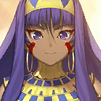

- 8/30
- 定期維修公告（8/31 13:00實施）
非常感謝您的使用。
這裡是「Fate/Grand Order」營運團隊。
將於下記的期間實施「Fate/Grand Order」的定期維修。
維修中無法遊玩「Fate/Grand Order」。
維修開始前請完全結束(關閉程式)。
※維修結束後，若直接以之前的狀態繼續遊玩的話，可能有不正確進行更新而無法正常動作的情況。
維修後由於更新檔案的下載等通信量增加，可能會有短時間覺得遊戲動作變慢的情況。
在維修結束後，請試著檔案的全部下載(一括ダウンロード)。
另外推薦在可連接Wi-Fi的環境中下載。
■時間
2016年8月31日(三)13:00～16:00（預定）
※維修結束的預定時間可能會有前後差異。
▼遊戲的更新
1.聖晶石召喚(期間限定)「卡美洛2Pick Up召喚」的實施
2.一部份概念禮裝的背景描述文字的更新
※對象概念禮裝如下。
・
3.一部份Servant的寶具卡圖像的修改
※對象Servant如下。
・
4.一部份Servant攻擊時的特效更新
※對象的Servant如下。
・

5.一部份Servant的絆Lv.上限從Lv.5變更至Lv.10(8/31追記)
※對象Servant如下。
※絆Lv.到達10時，給予每位Servant的原創概念禮裝。
・


6.期間限定活動「夏日！ 大海！ 開拓！ FGO 2016 Summer」的結束
7.從全Servant及一部份概念禮裝的保有技能，刪除有關已結束活動的文字
※對象的概念禮裝如下。
・


8.聖晶石召喚(期間限定)「夏日！ 大海！ 開拓！ FGO 2016 Summer Pick Up召喚1」的結束
9.聖晶石召喚(期間限定)「夏日！ 大海！ 開拓！ FGO 2016 Summer Pick Up召喚2」的結束
▼問題的修正
1.一部份Servant的寶具說明文字誤記的問題修正
※僅有文字的變更，效果自身並無變更。
※對象Servant如下。
・
(修正前)對我方全體賦予無敵（1回合）&防禦力提升（3回合）&賦予每回合HP回復＜OverCharge的話效果提升＞+對自身暈眩效果（2回合）
(修正後)對我方全體賦予無敵（1回合）&防禦力提升（3回合）&賦予每回合HP回復（2回合）＜OverCharge的話效果提升＞+對自身暈眩效果（2回合）
2.一部份Servant寶具強化後的說明文字誤記的問題修正
※僅有文字的變更，效果自身並無變更。
※對象Servant如下。
・
(修正前)對敵全體的強力攻擊＆攻擊力下降(3回合)＜OverCharge的話效果提升＞＋對自身賦予精神異常無效(3回合)
(修正後)對敵全體的強力攻擊＆攻擊力下降(3回合)＜OverCharge的話效果提升＞＋對自身賦予精神異常無效狀態(3回合)
3.一部份Servant的戰鬥角色圖像問題修正
※對象Servant如下。
・

4.一部份Servant的寶具演出時圖像問題修正
※對象Servant如下。
・
5.在戰鬥中，一部份概念禮裝的技能效果測定有誤的問題修正
※對象概念禮裝如下。
・
6.在戰鬥中，一部份Servant攻擊時特效顯示的問題修正
※對象Servant如下。
・
▼遊戲的修改
・各種UI及幫助文字的調整
對上述的問題修正感到抱歉，會向對象的玩家做出以下對應。
【對象】
於8/31(三) 12:59前有遊玩過「Fate/Grand Order」的所有玩家
【對應內容】
・聖晶石3個
【配布方法】
在禮物箱配布
【配布期間】
2016年9月1日(四)AM3:00～2017年2月28日(二)22:59
非常抱歉麻煩到正在使用的玩家。